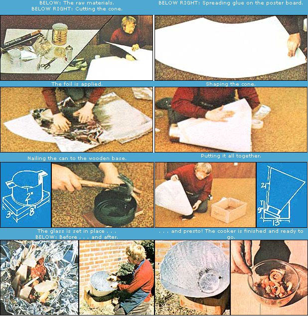
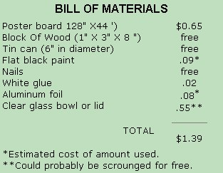

"You don't have to spend two hundred, one hundred, or even fifty dollars for a solar oven," writes Ulysses Weldon of Hyattsville, Maryland. "Believe it or not, I can show you how to make a perfectly good sun-powered cooker in less than an hour for only a buck!"
Sounds unlikely, but it's true . . . as MOTHER staffers Dennis Burkholder and Travis Brock recently found when they built (and cooked a batch of vittles in) one of Weldon's "dollar solar cookers". (See photos.) Got thirty minutes? Here's how you can make your own $1.00 cooker:
[1] Draw the curved pattern shown below onto a 28" X 44'r piece of poster board (or two 22" X 28'r pieces of board joined together) . . . then cut along the curved lines.
[2] Glue or paste aluminum foil to one side of the poster board.
[3] Bend the foil-covered poster board back on itself (foil to the inside) to form a cone. (IMPORTANT NOTE: Your cone-if properly constructed-will NOT be symmetrical. This is as it should be.) Be sure-before taping the poster board's edges together-that your tin can (see "Bill of Materials" given below) fits snugly in the small end of the cone.
[4] Using metal shears, cut the tin can so that it is two inches tall and has "ears" as shown in the drawing . . . then paint the can flat black inside and out, and nail it to a 1 " X 3" X 8" piece of wood.
[5] Place the poster-board cone over the tin can, fit a clear glass bowl or lid over the flat black "cooking compartment" . . . and you've got a made-it-yourself solar oven!
To cook up a meal, simply wrap a single serving of whatever it is you want to cook in aluminum foil ("preferably," says Travis, "foil that you have painted black on the outside"), set the wrapped "eats" in the oven's cooking compartment, cover the tin can with a glass lid, and keep the cooker aimed at Ole Sol. In an hour-or however long it takes your dish to cook at 240°F-you'll be ready to feast.
Ulysses Weldon's nifty little solar cookerit's true-will only bake one serving (about half a pound) of food at a time. Still, that's not much of a price to pay for a solar oven that does with aluminum foil what others do only slightly better with a vast array of mirrors. Ulysses Weldon, MOTHER salutes you!
|
 |
 |
|